This window was started by MBXHub.
A charm declared a launch target, a person approved it on the Charm Manager row, and pressing the entry handed that exact string to Windows.
launch
started by MBXHub · run directly ·